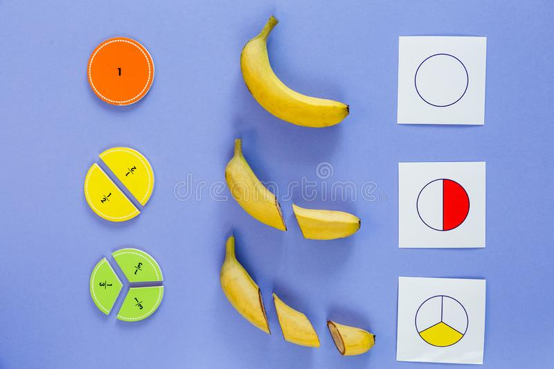

Before understanding fractions, We will understand divide first or division in common. The division is inverse of Multiplication, in multiplication we do repetitive addition, and in the division, we do repetitive subtraction.
Let's learn by this example, Primitive people didn't know how to divide so whenever they would go for a hunt or to pick some cherries or fruits, there would be an internal fight between tribes and tribe members when they had to share food because they didn't know how to equally distribute the food and sometimes these fights will burn more energy and injury that wasn't even worth hunting or gathering. So people came with the idea of repetitive subtraction which was basically "divide" itself.
Initially when the division was not there and you were asked to divide these 15 bananas to these 3 children, the first idea will give one-one banana to each child until you finish distributing all 15 of them and then count the number of banana to one of the children and that will tell you the equal share in which they were divided.
So it will be 5 bananas for each of the kids if we divide 15 bananas into 3 kids.
But this method is really not a smart way to do the division like one by one, what if there were 150 or 1500 bananas. The smart way would be to find the groups of 3 bananas in a bunch of 15.
Now the total number of groups of 3 will be the total number of bananas that each child will get i.e 5
Another way is to use the multiples(Table) of 3 in order to find the groups of 3 which add up to is 15.
3 x 1 = 3 = 3
3 x 2 = 3 + 3 = 6
3 x 3 = 3 + 3 + 3 = 9
3 x 4 = 3 + 3 + 3 + 3 = 12
3 x 5 = 3 + 3 + 3 + 3 + 3 = 15
So we can see 3 times 5 is 15 thus 5 groups of 3 can be distributed equally amongst 15, where everybody getting five-five bananas each.
That was Division but there is a thing which we can't solve without Fractions, lets hit that.
Fractions
What if there were 16 bananas and had to share it with 3 people, so we know for 15 it will be five to each of them but what will happen to the extra banana?
We can slice that extra banana into 3 pieces equally and share each piece with every child.
So now every child will get 5 bananas and 1/3 bananas:
- 1. kid = 5 + ⅓ = 5⅓
- 2. kid = 5 + ⅓ = 5⅓
- 3. kid = 5 + ⅓ = 5⅓
Let's add them together to see how operations work in fractions.
kid1 + kid2 + kid3
5 + ⅓ + 5 + ⅓ + 5 + ⅓
15 + ⅓ + ⅓ + ⅓
15 + ⅔ + ⅓
15 + 3/3
15 + 1
16